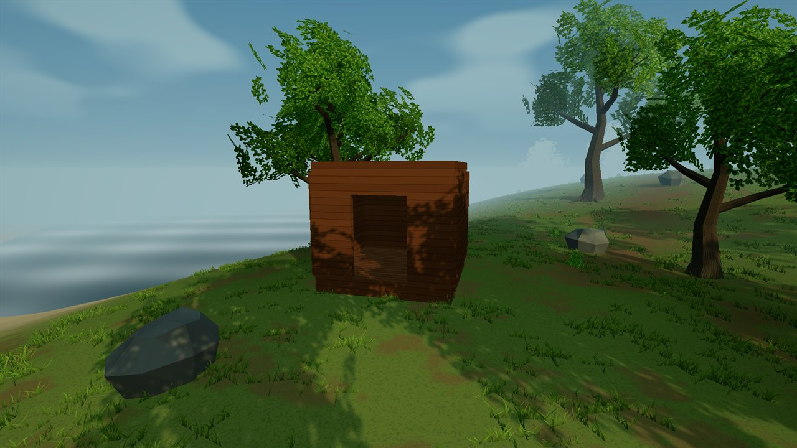
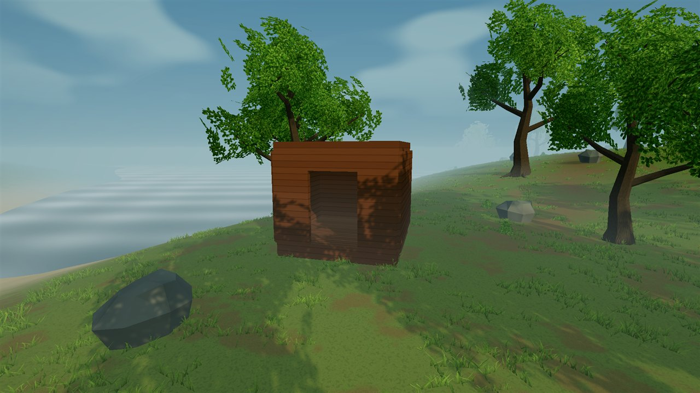

DAY / CONSTRUCTION STUDY
A shelter in the clearing
A staged fixture built from the existing foundation, floor, wall, doorway, and flat-roof pieces.

Before this rendering pass
Study 04: the same camera before SMAA, HDR capture and grading, foliage colours, grass-root blending, and directional horizon tint. Wind can differ between captures.

Before the lighting pass
Study 03: the same camera and procedural assets before the sunlight, ambient shading, and fog changes. Wind can differ between captures.
